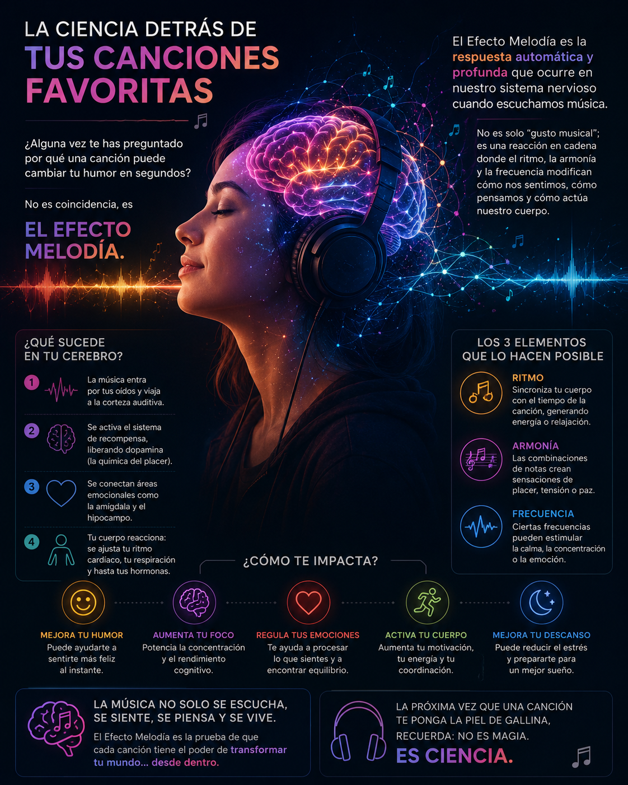

¿Alguna vez te has preguntado por qué una canción puede cambiar tu humor en segundos? No es coincidencia, es El Efecto Melodía.
El Efecto Melodía es la respuesta automática y profunda que ocurre en nuestro sistema nervioso cuando escuchamos música. No es solo "gusto musical"; es una reacción en cadena donde el ritmo, la armonía y la frecuencia modifican cómo nos sentimos, cómo pensamos y cómo actúa nuestro cuerpo.